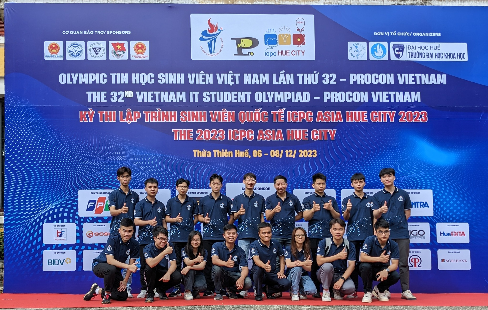
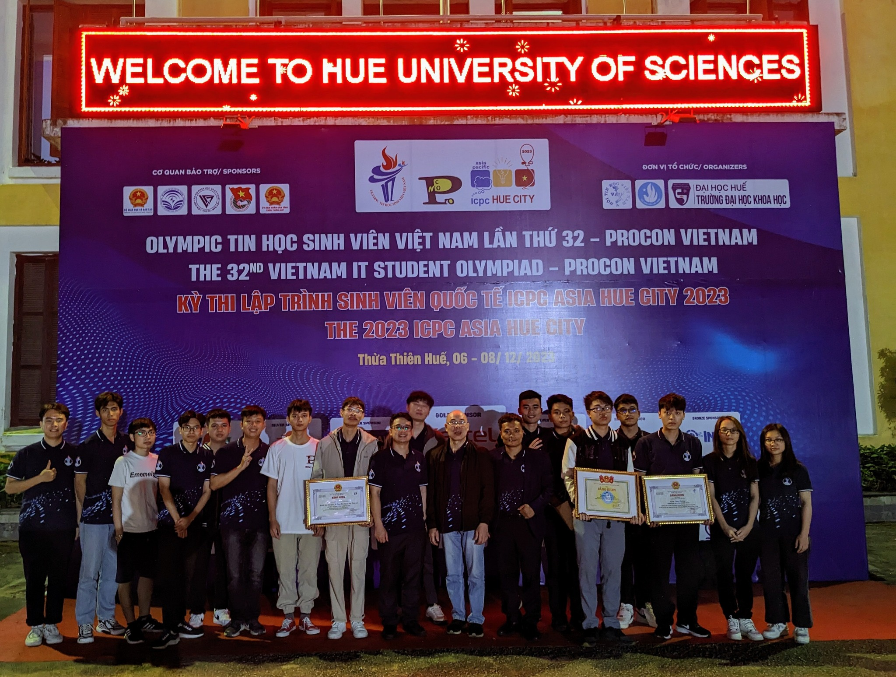
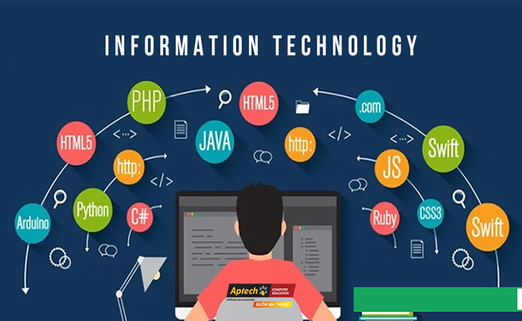
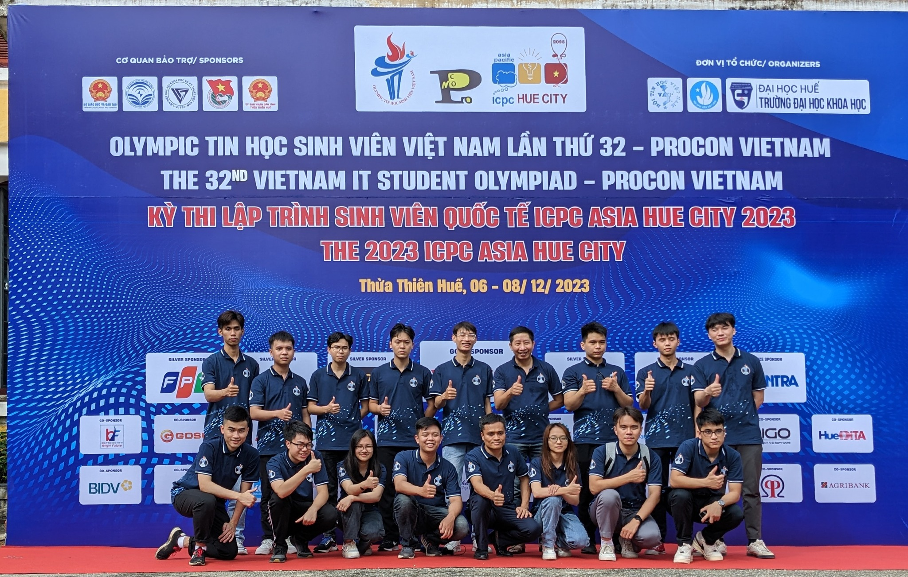
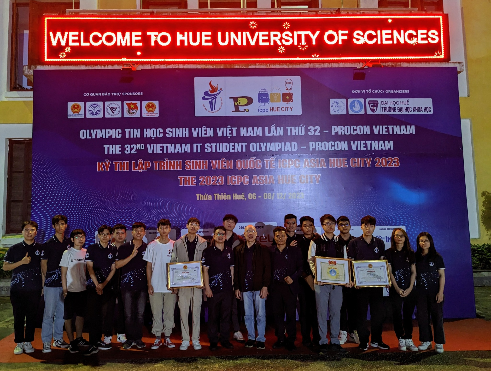
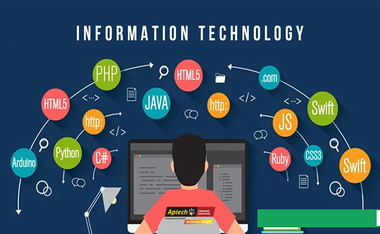

⚡Câu lạc bộ tin học HIT là Câu lạc bộ hoạt động trong lĩnh vực Công nghệ thông tin trực thuộc khoa Công nghệ thông tin
trường ĐH Công Nghiệp Hà Nội. Được thành lập vào ngày 18/8/2010
⚡Mục đích:
HIT là môi trường trao đổi, học tập và nâng cao kiến thức.
Là nơi giao lưu, kết bạn và thử thách bản thân.
⚡Hiện tại, Bộ phận truyền thông khoa CNTT – FIT Media được chia thành 4 ban và một đội phát triển: Ban đào tạo và phát triển,
Ban sự kiện, Ban truyền thông, Ban giám sát chất lượng và thiết kế, Team dev
Các hoạt động chủ yếu:
* Câu lạc bộ hoạt động trao đổi kiến thức chuyên ngành qua các hình thức tổ chức các khóa học định kỳ ,các nhóm học tập:
- Khóa học lập trình cơ bản: Các lớp học đã triển khai: ngôn ngữ lập trình C/C++ , ngôn ngữ lập trình Java, ngôn ngữ lập trình Python, thiết kế web.
- Nhóm học lập trình nâng cao: tìm hiểu sâu hơn các ngôn ngữ lập trình, nâng cao trình độ và các kiến thức cần thiết để thực hiện các công việc mang tính thực tế. Thành lập các nhóm học, ôn thi các cuộc thi được tổ chức, các nhóm học các ngôn ngữ lập trình khác.
* Tổ chức sự kiện - hoạt động khác:
- Giao lưu giữa các Câu lạc bộ, tham gia các hoạt động của Hội Sinh viên, Đoàn trường.
- Tổ chức các buổi hướng nghiệp cho sinh viên.
- Tổ chức một số cuộc thi quy mô nhỏ nhằm thu hút sự tham gia của sinh viên như thi lập trình trực tuyến, thi tuyển thành viên...
Phương thức hoạt động:
- Trao đổi kiến thức
- Mở các lớp học thường niên theo tình hình thức tế
- Hoạt động theo nhóm
- Giao lưu, học hỏi với các Câu lạc bộ khác
- Tổ chức các sự kiện cho thành viên và cộng đồng
- Tham gia hỗ trợ các hoạt động của khoa.
 




